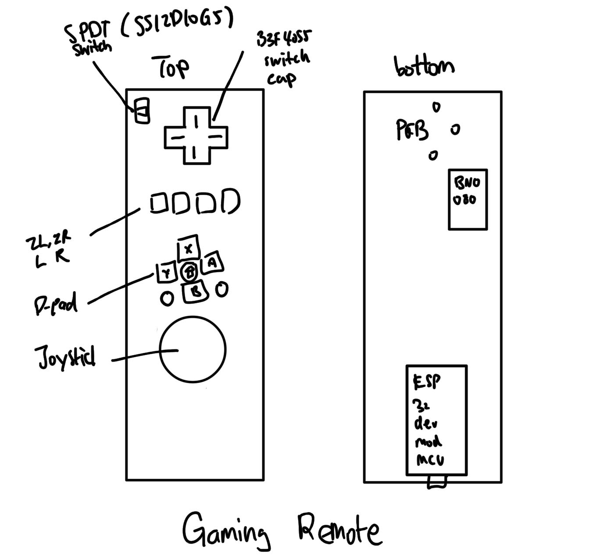
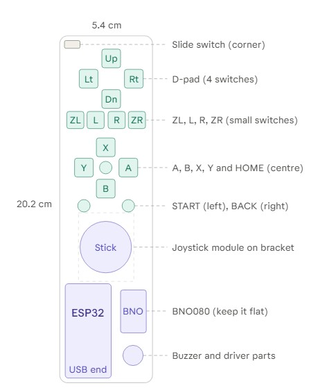
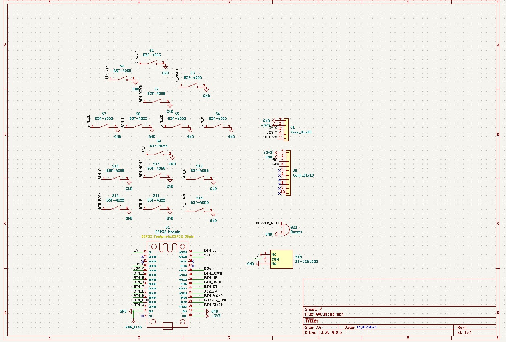
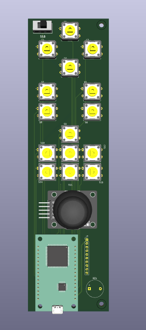
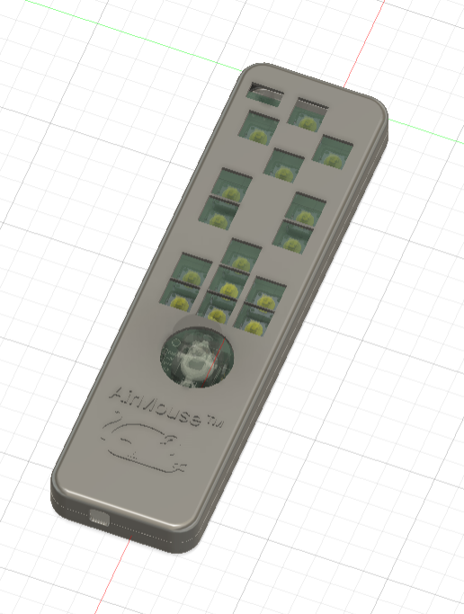

AirMouse
One-handed adaptive gaming remote
A one-handed adaptive controller with a joystick, motion input, and Bluetooth connectivity. I designed the electronics, firmware, PCB, and enclosure for my PlayStation Career Pathways Prompt 3 project.
Role: Hardware Designer & Firmware Developer
Tools: ESP32, BNO080 IMU, KiCad, Fusion 360 & Bambu Slicer
My Ownerships
This is a solo-project for PlayStation Fall 2026 Game Jam.I developed the controller from the initial sketches through breadboard testing, PCB design, and enclosure CAD.
- Electronics: Built and tested the breadboard prototype, including the ESP32, joystick, buttons, IMU, buzzer, and switch.
- Firmware: Wrote and debugged Bluetooth gamepad and air-mouse modes with Home-button mode switching.
- ECAD: Designed the KiCad schematic, verified footprints, routed the PCB.
- MCAD: Designed the Fusion 360 enclosure around the PCB STEP model and prepared it for 3D printing.
- Documentation: Measured components, prepared BOM, and shared regular progress updates.
The one-handed control concept
I wanted to build an adaptive controller for players who use one hand. I sketched a few TV-remote-style layouts with a joystick, directional controls, and game buttons within reach.
The joystick controls movement, while rotating the remote could control the camera or aiming. This reduces dependence on a second analog stick and leaves more room for buttons.


Electronics prototyping & ECAD
I wired the ESP32, joystick, buttons, BNO080 IMU, buzzer, and enable switch on a breadboard and tested their functions. The prototype uses USB power and communicates over Bluetooth.
I completed the schematic in KiCad, verified the footprints, and routed the PCB. After reviewing the layout, I sent it to JLCPCB for manufacturing in November 2026. Next are board testing and desoldering the KY-023 joystick module for assembly.


Mechanical design & 3D printing
I measured the components and designed the enclosure in Fusion 360 using the PCB's ECAD STEP file. I then imported the model into Bambu Slicer and selected the print colors. The enclosure is ready for printing and fit testing.

Firmware & control modes
I wrote and debugged two control modes. Air-mouse mode uses the IMU gyroscope to move the PC cursor, with the plus and minus buttons as left and right click. Gamepad mode sends joystick and button inputs over Bluetooth. Long-pressing Home switches modes.
Assembly & final testing
Next, I will solder and assemble the controller, debug the firmware on the final hardware, and test it with a PC game. Testing will cover the inputs, mode switching, Bluetooth connection, and whether the buttons are comfortable to reach during one-handed play.
This prototype is for PC. A PS5 version would need a supported controller interface and authentication.
Bill of Materials (BOM)
Component subtotal: $35.25
| A | B | C | D | E | F | G | |
|---|---|---|---|---|---|---|---|
| 1 | Level | Part # | Part Name | Description | Material | Cost (USD) | External Component Vendor |
| 2 | 1 | AirMouse | One-handed adaptive controller prototype | ||||
| 3 | 1.1 | ESP32 | Microcontroller | Bluetooth input communication and firmware | N/A | ||
| 4 | 1.2 | KY-023 | Joystick Module | Dual-axis joystick with push-button input | N/A | $3.50 | |
| 5 | 1.3 | BNO080 | IMU | 9-DOF motion-sensor breakout | N/A | $20.00 | |
| 6 | 1.4 | B3F-4055 | 15 Buttons | 15 tactile switches × $0.452 (10+ price tier) | N/A | $6.78 | DigiKey |
| 7 | 1.5 | Buzzer | Passive buzzer | N/A | $2.40 | ||
| 8 | 1.6 | SS12D10G5 | Slide Switch | SHOU HAN slide switch | N/A | $0.17 | LCSC |
| 9 | 1.7 | Miscellaneous Parts | Wiring, headers, and mounting hardware | N/A | |||
| 10 | 1.8 | PCB | Custom PCB; $12 for 5 boards | N/A | $2.40 | JLCPCB | |
| 11 | 1.9 | Joystick Mount | 3D-printed joystick mounting bracket | PLA | Bambu Lab PLA Basic | ||
| 12 | 1.10 | Front Housing | Front enclosure housing | PLA | Bambu Lab PLA Basic | ||
| 13 | 1.11 | Rear Housing | Rear enclosure housing | PLA | Bambu Lab PLA Basic | ||
| 14 | Component Subtotal | $35.25 |
© 2026 Enqi Wang. All rights reserved.